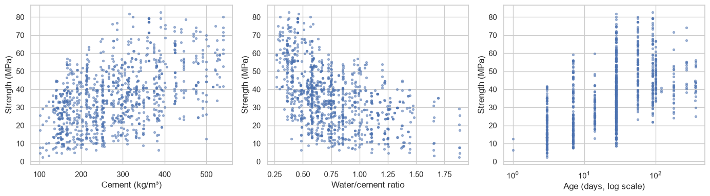
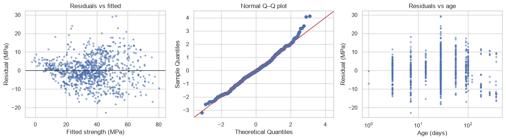
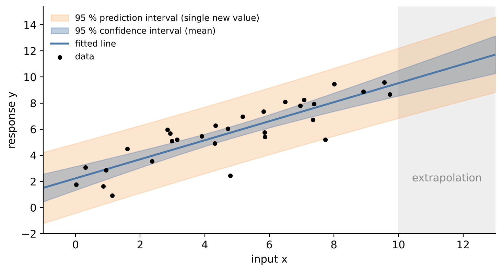
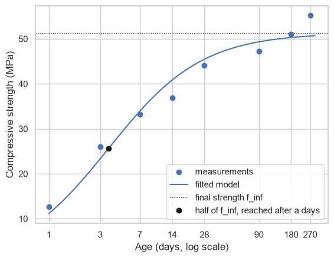
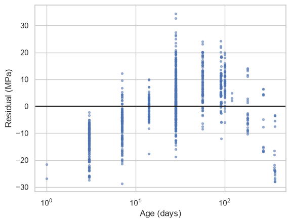
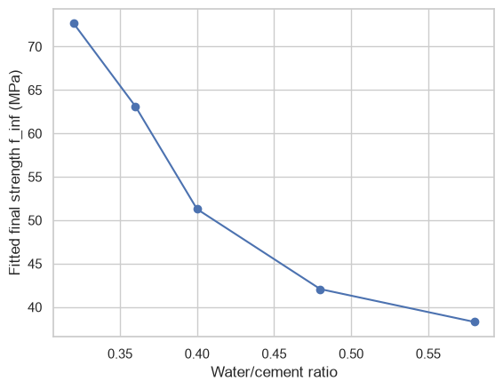
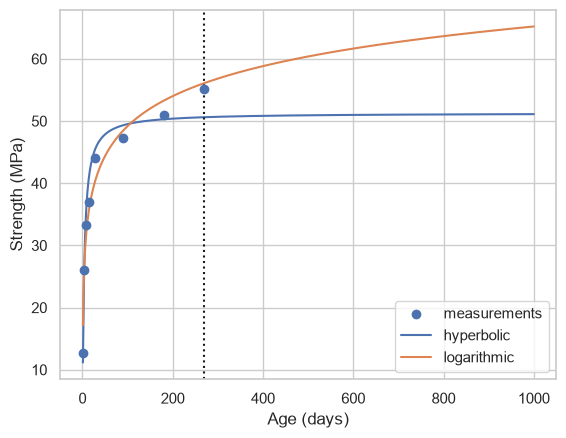

# Setup: works locally and in Google Colab
import importlib.util, subprocess, sys
for pkg in ["ucimlrepo"]: # package that is not pre-installed everywhere
if importlib.util.find_spec(pkg) is None: # not installed yet?
subprocess.run([sys.executable, "-m", "pip", "install", "-q", pkg], check=True) # install it
import numpy as np
import pandas as pd
import matplotlib.pyplot as plt
import seaborn as sns
import statsmodels.formula.api as smf
import statsmodels.api as sm
sns.set_theme(style="whitegrid")5 Linear and Nonlinear Regression
Regression is the workhorse of engineering data analysis. Calibration curves, empirical material laws, characteristic maps of engines and process models are all regression models: they describe how a quantity of interest – the response – depends on one or more influencing quantities – the inputs, factors or features. A regression model can be used to understand a process (which factors matter, how strongly?) and to predict the response for new input values. The two purposes ask different questions of the same model; Section 5.1.5 compares them.
This chapter starts with the multiple linear regression model, its estimation by least squares and the statistical tools to interpret and check it. We then fit nonlinear models with physical meaning, which are common in engineering. Finally, we show how a designed experiment avoids correlated inputs from the start.
Scenario: releasing a precast element
A precast concrete plant wants to use a new, cheaper mix: 350 kg cement and 180 kg water per m³, 5 kg superplasticizer, no slag or fly ash. The elements require a compressive strength of 35 MPa before they may be loaded. No test specimens of the new mix exist yet. A database of 1,030 laboratory tests of other mixes is available; among them, 22 tests of similar mixes – water/cement ratio between 0.45 and 0.55, no slag or fly ash – reached 36 MPa on average after 28 days, with individual results between 23 and 45 MPa. The production manager asks: “Can we promise the customer 35 MPa after 28 days – and if not, when?”
Your decision: Approve the mix for the 28-day delivery promise – or name a later date?
Before reading on: write down your own decision and how confident you are. You will compare it with the result at the end of the chapter.
Learning goals. After this chapter you can
- fit and interpret multiple linear regression models with statsmodels,
- explain least squares, coefficient standard errors, R² and the difference between confidence and prediction intervals,
- check model assumptions with residual analysis and recognise collinearity,
- use transformations of inputs and response to linearise relationships,
- fit nonlinear physical or empirical models with
scipy.optimize.curve_fitand quantify parameter uncertainty, - explain why observational data show associations but not causes, and how a full factorial design separates the effects of the inputs.
Course goal. This chapter contributes to step 3 of the course goals: quantify effects and uncertainty.
Datasets in this chapter
5.1 The linear model
Definition: Multiple linear regression
The response \(y\) is modelled as a linear function of \(p\) inputs plus a random error: \[\begin{gathered} y_i = \beta_0 + \beta_1 x_{i1} + \dots + \beta_p x_{ip} + \varepsilon_i, \\ \varepsilon_i \sim N(0, \sigma^2) \text{ independent}. \end{gathered}\] In matrix form, \(y = X\beta + \varepsilon\), where the design matrix \(X\) has a first column of ones for the intercept.
“Linear” refers to the parameters, not to the inputs. Models like \(y = \beta_0 + \beta_1 \ln x + \beta_2 x^2\) or \(y = \beta_0 + \beta_1 x_1 x_2\) are linear models, because they are linear in \(\beta\). This makes the linear model much more flexible than its name suggests.
5.1.1 Estimation by least squares
The coefficients are chosen to minimise the sum of squared residuals \(\sum_i (y_i - \hat y_i)^2\). If the errors are normally distributed, this is exactly the maximum likelihood estimate (Chapter 3): apart from constants, the negative log-likelihood of normal errors is the sum of squared residuals. Setting the derivatives to zero gives the solution:
Least squares estimate and its uncertainty
The minimisation gives the coefficients – without any assumption about the errors: \[\hat\beta = (X^\top X)^{-1} X^\top y.\] If the errors are independent and have the same variance \(\sigma^2\) everywhere, the uncertainty of the coefficients follows as \[\begin{aligned} \widehat{\text{Cov}}(\hat\beta) &= \hat\sigma^2 (X^\top X)^{-1}, \\ \hat\sigma^2 &= \frac{1}{n - p - 1}\sum_i (y_i - \hat y_i)^2. \end{aligned}\] \(\hat\sigma^2\) estimates the scatter of the data around the model from the residuals. The divisor \(n - p - 1\) takes into account that the \(p + 1\) coefficients were estimated from the same data – just as the standard deviation \(s\) divides by \(n - 1\) because the mean was estimated (Chapter 3).
The covariance matrix \(\widehat{\text{Cov}}(\hat\beta)\) collects the uncertainty of all coefficients: its diagonal contains their variances, i.e. the squared standard errors – how much each coefficient would vary with new data (Chapter 3); an off-diagonal entry describes how strongly two estimates vary together. Divided by the two standard errors, it gives their correlation – between −1 and 1, as in Chapter 1.
You will not compute these formulas by hand – statsmodels does. What they show: the standard errors grow with the scatter \(\hat\sigma\) of the data around the model and with the correlation between the inputs (through \((X^\top X)^{-1}\), see Collinearity below), and they shrink as \(n\) grows. And while the coefficients need no assumptions, their standard errors – and with them confidence intervals and p-values – are valid only if the errors are independent with constant variance. This is what the residual analysis below checks.
5.1.2 Interpreting the output
- Coefficient \(\hat\beta_j\): expected change of \(y\) when \(x_j\) increases by one unit and all other inputs stay constant. The last part is crucial – and often unrealistic when inputs are correlated.
- Standard error, t-value, p-value: the t-value \(t_j = \hat\beta_j / \text{SE}(\hat\beta_j)\) states how many standard errors the coefficient lies away from 0 – the same idea as the t-statistic in Chapter 4. It tests \(H_0: \beta_j = 0\), i.e. whether \(x_j\) has any effect when the other inputs are in the model. Under \(H_0\), it follows a t-distribution with \(n - p - 1\) degrees of freedom, which gives the p-value (column
P>|t|). The 95 % confidence interval is \(\hat\beta_j \pm t_{n-p-1,\,0.975}\,\text{SE}(\hat\beta_j)\), with the t-distribution from Chapter 3. - Coefficient of determination \(R^2 = 1 - \frac{\sum (y_i - \hat y_i)^2}{\sum (y_i - \bar y)^2}\): share of the variance of \(y\) explained by the model. It never decreases when another input \(x_j\) is added to the model – even a column of random numbers, like
rv1in Chapter 2, raises it slightly. The adjusted \(R^2\), \(1 - (1 - R^2)\,\frac{n - 1}{n - p - 1}\), corrects for this: every additional input costs a degree of freedom, so the adjusted \(R^2\) rises only if the new input improves the fit noticeably.
Pitfall: R² measures fit, not validity
A high \(R^2\) does not mean that the model is correct, that it predicts well on new data or that the relationships are causal. Conversely, a low \(R^2\) can be perfectly acceptable if the process is inherently noisy. Always look at the residuals – and, for prediction, at the error on test data (Chapter 6).
5.1.3 Model assumptions and residual analysis
The statistical statements (standard errors, p-values, intervals) rely on assumptions about the errors. The residuals \(e_i = y_i - \hat y_i\) are our window to check them:
| Assumption | Check | Typical violation in engineering data | If violated |
|---|---|---|---|
| Linearity (correct functional form) | residuals vs. fitted values and vs. each input: no pattern | saturation, threshold effects | coefficients and predictions are biased |
| Constant variance | spread of residuals constant | relative errors: spread grows with the response | standard errors and prediction intervals are wrong |
| Independence | residuals vs. time / order | time series, batches, repeated measurements on the same part | standard errors too small, p-values too optimistic |
| Normality | Q–Q plot of residuals | outliers, skewed responses | prediction intervals for single values are wrong; in small samples also confidence intervals and p-values |
Engineering practice: transformations
Many engineering relationships are multiplicative or saturating. A log transformation of the response or of an input often linearises the relationship and stabilises the variance at the same time. Physical knowledge tells you which transformation makes sense: for concrete, strength grows quickly at first and then levels off, which suggests \(\ln(\text{age})\).
5.1.4 Collinearity
When inputs are strongly correlated, their individual effects cannot be separated well: the coefficients get large standard errors, can have implausible signs and change strongly when another input is added. The variance inflation factor \(\text{VIF}_j = 1/(1 - R_j^2)\) quantifies this. \(R_j^2\) is the \(R^2\) of an auxiliary regression that predicts \(x_j\) from all other inputs – how well \(x_j\) is already explained by them. The VIF states by which factor the squared standard error of \(\hat\beta_j\) is larger than it would be for uncorrelated inputs; values above about 5–10 indicate problematic collinearity. Collinearity does not harm predictions within the range of the data, but it ruins the interpretation of individual coefficients.
5.1.5 Understanding or predicting?
The last point shows that it matters what a model is used for. The same fitted model can serve two purposes, and each purpose asks different questions of it:
Two uses of the same model
| Inference (this chapter) | Prediction (from Chapter 6) | |
|---|---|---|
| Question | Which inputs matter, how strongly, and how certain is that? | How accurately is the response predicted for new inputs? |
| What we look at | coefficients with standard errors, confidence intervals and p-values | the error on data that were not used for fitting (test data, cross-validation) |
| What must hold | the model form is correct and the errors meet the assumptions – checked with the residuals | new data come from the same process and range as the training data |
| Collinearity | serious: individual coefficients cannot be interpreted | harmless, as long as new inputs combine like those in the training data |
| Suitable models | simple and interpretable | any model that predicts well, including very flexible ones (Chapters 6–8, 12) |
Many engineering questions need both. The release decision at the end of this chapter is a prediction – the strength of a new mix – but it is made with the statistical tools of this chapter: a prediction interval that is valid only if the model assumptions hold. Chapter 6 shows how to check the quality of predictions directly on data the model has not seen.
5.2 Live coding: concrete strength
The dataset contains 1,030 laboratory tests of concrete. Each test is described by the amounts of seven mixture components in kg per m³ of concrete and the age of the specimen at testing (1 to 365 days); the response is the compressive strength in MPa. Concrete strength is a classic example of a highly nonlinear material property: it depends on the water/cement ratio, on supplementary materials such as blast furnace slag and fly ash, on the superplasticizer and on the curing time.
from ucimlrepo import fetch_ucirepo
concrete = fetch_ucirepo(id=165) # download the dataset from the UCI repository
conc = concrete.data.features.copy() # the eight inputs
conc.columns = ["cement", "slag", "fly_ash", "water", "superplasticizer",
"coarse_agg", "fine_agg", "age"] # short names; kg/m³, age in days
conc["strength"] = concrete.data.targets.iloc[:, 0] # first (and only) target column: strength in MPa
conc.describe().T.round(1) # one row per variable| count | mean | std | min | 25% | 50% | 75% | max | |
|---|---|---|---|---|---|---|---|---|
| cement | 1030.0 | 281.2 | 104.5 | 102.0 | 192.4 | 272.9 | 350.0 | 540.0 |
| slag | 1030.0 | 73.9 | 86.3 | 0.0 | 0.0 | 22.0 | 143.0 | 359.4 |
| fly_ash | 1030.0 | 54.2 | 64.0 | 0.0 | 0.0 | 0.0 | 118.3 | 200.1 |
| water | 1030.0 | 181.6 | 21.4 | 121.8 | 164.9 | 185.0 | 192.0 | 247.0 |
| superplasticizer | 1030.0 | 6.2 | 6.0 | 0.0 | 0.0 | 6.4 | 10.2 | 32.2 |
| coarse_agg | 1030.0 | 972.9 | 77.8 | 801.0 | 932.0 | 968.0 | 1029.4 | 1145.0 |
| fine_agg | 1030.0 | 773.6 | 80.2 | 594.0 | 731.0 | 779.5 | 824.0 | 992.6 |
| age | 1030.0 | 45.7 | 63.2 | 1.0 | 7.0 | 28.0 | 56.0 | 365.0 |
| strength | 1030.0 | 35.8 | 16.7 | 2.3 | 23.7 | 34.4 | 46.1 | 82.6 |
Code
fig, axes = plt.subplots(1, 3, figsize=(14, 4)) # three panels side by side
axes[0].scatter(conc["cement"], conc["strength"], s=8, alpha=0.5)
axes[0].set(xlabel="Cement (kg/m³)", ylabel="Strength (MPa)")
axes[1].scatter(conc["water"] / conc["cement"], conc["strength"], s=8, alpha=0.5) # water/cement ratio
axes[1].set(xlabel="Water/cement ratio", ylabel="Strength (MPa)")
axes[2].scatter(conc["age"], conc["strength"], s=8, alpha=0.5)
axes[2].set(xscale="log", xlabel="Age (days, log scale)", ylabel="Strength (MPa)") # logarithmic age axis
plt.tight_layout(); plt.show()
Strength increases with the cement content, decreases with the water/cement ratio (a classical rule in concrete technology, known as Abrams’ law) and grows with age – roughly linearly in the logarithm of the age. We therefore enter age as \(\ln(\text{age})\):
model = smf.ols("strength ~ cement + slag + fly_ash + water + superplasticizer"
" + coarse_agg + fine_agg + np.log(age)", data=conc).fit() # formula: response ~ inputs
print(model.summary()) # the complete regression table OLS Regression Results
==============================================================================
Dep. Variable: strength R-squared: 0.819
Model: OLS Adj. R-squared: 0.817
Method: Least Squares F-statistic: 575.6
Date: Fri, 27 Nov 2026 Prob (F-statistic): 0.00
Time: 19:38:35 Log-Likelihood: -3482.4
No. Observations: 1030 AIC: 6983.
Df Residuals: 1021 BIC: 7027.
Df Model: 8
Covariance Type: nonrobust
====================================================================================
coef std err t P>|t| [0.025 0.975]
------------------------------------------------------------------------------------
Intercept -77.5334 18.331 -4.230 0.000 -113.504 -41.563
cement 0.1349 0.006 23.055 0.000 0.123 0.146
slag 0.1159 0.007 16.647 0.000 0.102 0.130
fly_ash 0.0944 0.009 10.944 0.000 0.077 0.111
water -0.1288 0.028 -4.673 0.000 -0.183 -0.075
superplasticizer 0.1188 0.064 1.846 0.065 -0.007 0.245
coarse_agg 0.0297 0.006 4.593 0.000 0.017 0.042
fine_agg 0.0360 0.007 4.886 0.000 0.022 0.050
np.log(age) 8.7466 0.192 45.610 0.000 8.370 9.123
==============================================================================
Omnibus: 19.634 Durbin-Watson: 1.305
Prob(Omnibus): 0.000 Jarque-Bera (JB): 22.742
Skew: 0.266 Prob(JB): 1.15e-05
Kurtosis: 3.496 Cond. No. 1.06e+05
==============================================================================
Notes:
[1] Standard Errors assume that the covariance matrix of the errors is correctly specified.
[2] The condition number is large, 1.06e+05. This might indicate that there are
strong multicollinearity or other numerical problems.Discussion. Statistical software prints more than one usually needs. For this model, four parts of the summary matter:
| Field | Meaning |
|---|---|
No. Observations, Df Residuals |
\(n = 1030\) tests; \(n - p - 1 = 1021\) degrees of freedom of the residuals (least squares box above) |
R-squared, Adj. R-squared |
share of the variance of the strength explained by the model, without and with a penalty for the number of inputs |
coef, std err, t, p-value column, [0.025 0.975] |
per input: coefficient, standard error, t-value, p-value and 95 % confidence interval |
Notes |
warnings; here about a large condition number, a measure of how strongly the inputs depend on each other – a sign of collinearity |
The other fields are formal tests of the model and the residuals, and numbers for comparing models. You can skip them here – the residual plots below show the same more clearly. Not knowing every number of an output is normal; knowing which numbers answer your question is the skill.
What the values say:
- The model explains about 82 % of the variation in strength.
- Coefficients: each value is the change in MPa per additional kg/m³ of the component (or per unit of \(\ln\) age), holding all other components constant. Cement, slag and fly ash act as binders and should have positive coefficients; water should have a negative one.
- Holding constant is tricky here: the components add up to roughly the volume of one cubic metre. If we add more cement, something else must be reduced. This built-in dependence causes collinearity – hence the warning about the large condition number (VIF values below) –, so the coefficients of the aggregates in particular cannot be interpreted on their own.
Code
fig, axes = plt.subplots(1, 3, figsize=(14, 4))
axes[0].scatter(model.fittedvalues, model.resid, s=8, alpha=0.5) # residuals vs. fitted values
axes[0].axhline(0, color="k", lw=1)
axes[0].set(xlabel="Fitted strength (MPa)", ylabel="Residual (MPa)", title="Residuals vs fitted")
sm.qqplot(model.resid, line="45", fit=True, ax=axes[1]) # fit=True: standardise the residuals first
axes[1].set_title("Normal Q–Q plot")
axes[2].scatter(conc["age"], model.resid, s=8, alpha=0.5) # residuals vs. age
axes[2].set(xscale="log", xlabel="Age (days)", ylabel="Residual (MPa)", title="Residuals vs age")
plt.tight_layout(); plt.show()
Discussion. Look for patterns: a curved band in the residuals vs. fitted values indicates a missing nonlinearity; a funnel shape indicates non-constant variance; structure in the residuals vs. age shows that the \(\ln\) transformation captures the age effect only approximately. Systematic patterns tell us that the linear model is an approximation – which is fine for interpretation of the main effects but limits its predictive accuracy. Flexible models in Chapters 6 and 8 will do better.
# VIF from its definition: regress each input on all other inputs (auxiliary regression)
data = conc.assign(log_age=np.log(conc["age"])) # ln(age) as a column of its own
inputs = ["cement", "slag", "fly_ash", "water", "superplasticizer",
"coarse_agg", "fine_agg", "log_age"]
vif = {}
for col in inputs:
others = " + ".join(c for c in inputs if c != col) # e.g. "slag + fly_ash + ... + log_age"
r2 = smf.ols(f"{col} ~ {others}", data=data).fit().rsquared # R_j²: col explained by the others
vif[col] = 1 / (1 - r2) # VIF_j = 1 / (1 - R_j²)
vif = pd.Series(vif, name="VIF")
vif.round(1)cement 7.5
slag 7.3
fly_ash 6.1
water 7.0
superplasticizer 3.0
coarse_agg 5.1
fine_agg 7.0
log_age 1.1
Name: VIF, dtype: float64Discussion. All mix components have VIF values between 3 and 7.5: their standard errors are 1.7 to 2.7 times larger than they would be for uncorrelated inputs. The cause is the fixed volume – the components add up to about one cubic metre, so each of them is largely determined by the others; for cement, the other inputs explain about 87 % of its variation (\(1 - 1/7.5\)). The age, in contrast, varies independently of the mix (VIF 1.1). This is the collinearity behind the large condition number in the summary. Thanks to more than 1,000 tests, most coefficients are still significant, but the coefficients of the components should not be read as the effect of one component with “all else constant” (Exercise 3).
5.2.1 Confidence vs. prediction intervals
A regression model gives two different kinds of intervals for a new input \(x_0\):
Definition: Confidence interval vs. prediction interval
Both intervals are centred on the predicted value \(\hat y_0 = x_0^\top \hat\beta\); they differ in what they describe.
- The confidence interval for the mean response \(E[y \mid x_0]\) reflects only the uncertainty of the estimated coefficients, expressed by the standard error \(\text{SE}(\hat y_0)\) of the predicted value: \[\hat y_0 \pm t_{n-p-1,\,0.975}\,\text{SE}(\hat y_0).\] This standard error shrinks towards zero as \(n\) grows.
- The prediction interval for a single new observation \(y_0\) additionally contains the scatter \(\sigma\) of individual observations around the mean: \[\hat y_0 \pm t_{n-p-1,\,0.975}\,\sqrt{\hat\sigma^2 + \text{SE}(\hat y_0)^2}.\] Even for very large \(n\), it never becomes narrower than about \(\pm 2\hat\sigma\).
\(\text{SE}(\hat y_0)\) follows from the covariance matrix of the coefficients (formula in Appendix B). It grows with the distance of \(x_0\) from the centre of the data – this is why both bands in Figure 5.1 widen towards the edges.

For an engineer who needs to know the strength of the next concrete batch, the prediction interval is the relevant one.
new_mix = pd.DataFrame({"cement": [350], "slag": [0], "fly_ash": [0], "water": [180],
"superplasticizer": [5],
"coarse_agg": [1000], "fine_agg": [780], # aggregates: typical values (assumed)
"age": [28]}) # the mix of the scenario at 28 days
model.get_prediction(new_mix).summary_frame(alpha=0.05).round(1) # mean, confidence and prediction interval| mean | mean_se | mean_ci_lower | mean_ci_upper | obs_ci_lower | obs_ci_upper | |
|---|---|---|---|---|---|---|
| 0 | 34.0 | 0.5 | 32.9 | 35.0 | 19.9 | 48.0 |
The columns contain everything from the definition box: mean is the predicted value \(\hat y_0\), mean_se its standard error \(\text{SE}(\hat y_0)\), mean_ci_lower/upper the confidence interval of the mean strength of such mixes at 28 days and obs_ci_lower/upper the prediction interval for a single specimen. With 1,030 tests, the mean is known to within about ±1 MPa, but individual tests scatter by \(\hat\sigma \approx 7\) MPa around the model – so the prediction interval is more than ten times wider than the confidence interval.
Pitfall: extrapolation
Regression models are only supported by data within the range of the inputs – and, with correlated inputs, only within the region where input combinations were observed. A mix with an unusual combination of components may lie within every single input range and still be far from the data.
5.3 Nonlinear curve fitting
Many engineering models are nonlinear in their parameters: hardening and creep curves, exponential decay, saturation curves, characteristic curves of components. They cannot be written as a linear model, but their parameters can still be estimated by least squares – numerically, by iteration:
\[\hat\theta = \arg\min_{\theta} \sum_i \left(y_i - f(x_i; \theta)\right)^2.\]
Unlike for the linear model, there is no formula for the solution. scipy.optimize.curve_fit begins with starting values and improves the parameters step by step until the sum of squared deviations no longer decreases.
Engineering practice: fitting physical models
- Starting values: poor starting values can lead to a wrong result or to none at all. Derive them from physics or read them off the data.
- Parameter uncertainty:
curve_fitreturns the fitted parameterspoptand their covariance matrixpcov(p for parameters), as for linear regression; the square roots of its diagonal are the standard errors. They are approximations – computed from the curvature of the sum of squares at the optimum – valid for approximately normal, independent errors. - Plausibility: physically meaningful parameters – unlike the coefficients of a polynomial – can be checked against experience. If the data do not determine a parameter, e.g. the final strength of a mix tested only at early ages, its standard error becomes large and its value implausible.
As an example we model the strength development of one concrete mix over time with the hyperbolic model
\[f_c(t) = f_\infty \, \frac{t}{a + t},\]
with the final strength \(f_\infty\) (MPa) and the time \(a\) (days) at which half of it is reached. Physically it describes a hydration process that slows down over time. We use the mix with 500 kg cement and 200 kg water per m³ (w/c = 0.4), which was tested at eight ages:
from scipy.optimize import curve_fit
mix = conc[(conc["cement"] == 500) & (conc["water"] == 200)] # all tests of this mix
mix[["age", "strength"]]| age | strength | |
|---|---|---|
| 746 | 1 | 12.64 |
| 747 | 3 | 26.06 |
| 748 | 7 | 33.21 |
| 749 | 14 | 36.94 |
| 750 | 28 | 44.09 |
| 796 | 90 | 47.22 |
| 797 | 180 | 51.04 |
| 798 | 270 | 55.16 |
The strength rises steeply in the first week and then ever more slowly. The starting values can be read off the table: the highest measured value for \(f_\infty\), and about 3 days for \(a\), since half of it (about 28 MPa) is reached after about 3 days.
def strength_model(t, f_inf, a):
"""Hyperbolic strength development: f_inf * t / (a + t)."""
return f_inf * t / (a + t)
p0 = [mix["strength"].max(), 3] # starting values read off the table
popt, pcov = curve_fit(strength_model, mix["age"], mix["strength"], p0=p0) # least squares fit
perr = np.sqrt(np.diag(pcov)) # standard errors of the two parameters
print(f"f_inf = {popt[0]:.1f} ± {perr[0]:.1f} MPa, a = {popt[1]:.1f} ± {perr[1]:.1f} days (± standard error)")f_inf = 51.3 ± 1.7 MPa, a = 3.6 ± 0.6 days (± standard error)f_inf, a = popt
t = np.linspace(1, 300, 3000) # ages at which the curve is drawn
plt.scatter(mix["age"], mix["strength"], label="measurements", zorder=3)
plt.plot(t, strength_model(t, f_inf, a), label="fitted model")
plt.axhline(f_inf, ls=":", c="k", lw=1, label="final strength f_inf")
plt.plot(a, f_inf / 2, "ko", label="half of f_inf, reached after a days")
plt.xscale("log") # logarithmic age axis: the first days become visible
plt.xticks(mix["age"], mix["age"]) # label the axis with the test ages
plt.xlabel("Age (days, log scale)"); plt.ylabel("Compressive strength (MPa)"); plt.legend()
plt.show()
Discussion. The two parameters have a direct engineering meaning: according to the model, this mix approaches a final strength of about 51 MPa and reaches half of it after less than four days. Such parameters can be compared between mixes – Exercise 4 relates the final strength to the water/cement ratio.
The plot also shows the limits of the model. The deviations are systematic: between 14 and 90 days the measurements lie below the curve, at 270 days even above the fitted final strength – the real strength keeps growing slowly. The standard errors assume random deviations and are therefore too optimistic. A model with two parameters is a compromise; whether it is good enough depends on the question (Exercise 5 compares it with a logarithmic model).
5.4 Designed experiments
The concrete data are observational: the mixes were not chosen to separate the effects of the components, so the inputs are correlated – the collinearity problem described above. Such data show which quantities move together, but not which one causes what. In a designed experiment, we set the factors ourselves, uncorrelated with each other; a difference between the levels of a factor can then be attributed to that factor.
Definition: Full factorial design
In a \(2^k\) full factorial design, each of \(k\) factors is set to a low and a high level, coded as −1 and +1, and all \(2^k\) combinations are run. In every pair of columns, all four combinations of levels occur equally often – so the factors are uncorrelated.
Suppose the plant of our scenario wants to tune the new mix with trial batches and varies three factors – cement, water and superplasticizer – each at two levels. A full factorial design needs \(2^3 = 8\) batches:
design = pd.DataFrame({"cement": [-1, -1, -1, -1, 1, 1, 1, 1], # -1: low level, +1: high level
"water": [-1, -1, 1, 1, -1, -1, 1, 1],
"superplasticizer": [-1, 1, -1, 1, -1, 1, -1, 1]}) # all 8 combinations
design| cement | water | superplasticizer | |
|---|---|---|---|
| 0 | -1 | -1 | -1 |
| 1 | -1 | -1 | 1 |
| 2 | -1 | 1 | -1 |
| 3 | -1 | 1 | 1 |
| 4 | 1 | -1 | -1 |
| 5 | 1 | -1 | 1 |
| 6 | 1 | 1 | -1 |
| 7 | 1 | 1 | 1 |
Compare the correlations of the three factors in this design with those in the laboratory data:
print("Designed experiment:")
print(design.corr().round(2) + 0) # + 0 shows -0.0 as 0.0
print("\nLaboratory data:")
print(conc[["cement", "water", "superplasticizer"]].corr().round(2))Designed experiment:
cement water superplasticizer
cement 1.0 0.0 0.0
water 0.0 1.0 0.0
superplasticizer 0.0 0.0 1.0
Laboratory data:
cement water superplasticizer
cement 1.00 -0.08 0.09
water -0.08 1.00 -0.66
superplasticizer 0.09 -0.66 1.00In the laboratory data, mixes with more superplasticizer contain clearly less water (r = −0.66): superplasticizer is used to save water, so the effects of the two are entangled. In the design, all correlations are zero – and therefore all VIF values equal 1. The effect of a factor is simply the mean strength of the four batches at its high level minus the mean of the four batches at its low level. Both halves contain the same settings of the other factors, so their influences cancel out.
Three additions make a real experiment reliable:
- Replicates – running every combination at least twice – estimate the scatter of the results; without them there are no standard errors.
- Randomising the order of the runs protects against drifts, e.g. a change in the raw materials during the test series.
- Interactions: the effect of one factor can depend on the level of another – superplasticizer, for instance, may help more at low water content. A full factorial design can estimate such interactions, too; how to plan and analyse them is the subject of the literature on design of experiments.
5.5 Back to the decision
A strength promise concerns individual elements, not the average of many – so the relevant interval is the prediction interval. To be on the safe side, we require that the lower end of the 95 % prediction interval reaches 35 MPa. We check 28 days and, if necessary, search for the earliest age at which the requirement is met.
required = 35.0 # MPa
ages = np.arange(1, 366) # every age from 1 day to one year
candidates = pd.concat([new_mix.drop(columns="age")] * len(ages),
ignore_index=True).assign(age=ages) # the new mix at every age
pi_low = model.get_prediction(candidates).summary_frame(alpha=0.05)["obs_ci_lower"].values # lower 95 % prediction bound
low_28 = pi_low[ages == 28][0] # ... at 28 days
print(f"Lower 95 % prediction bound at 28 days: {low_28:.1f} MPa")
if low_28 >= required:
print("Decision: approve the mix for the 28-day promise.")
elif (pi_low >= required).any(): # argmax finds the first age that meets the requirement
print(f"Decision: no promise at 28 days – the model reaches a safe bound only after "
f"{ages[np.argmax(pi_low >= required)]} days.")
else:
print("Decision: the model cannot guarantee 35 MPa within a year – adjust the mix (e.g. lower w/c ratio).")Lower 95 % prediction bound at 28 days: 19.9 MPa
Decision: no promise at 28 days – the model reaches a safe bound only after 158 days.Not even the mean strength at 28 days reaches the requirement: the model predicts 34.0 MPa, and a single element can fall far below that. A safe promise would only be possible after about five months – a date that relies entirely on the simple \(\ln(\text{age})\) trend of the model and that no customer would accept. In practice, no plant would release a new mix on the basis of a regression model alone. But the model tells us that trial batches of this mix are expected to reach only about 34 MPa at 28 days, and that the mix needs a lower water/cement ratio if 35 MPa are required at that age.
Recommendation to the production manager
- Recommendation: do not promise 35 MPa after 28 days. If the customer needs 35 MPa at 28 days, lower the water/cement ratio (currently 180/350 ≈ 0.51) and confirm the strength with trial batches before any promise.
- Uncertainty: the model predicts a mean 28-day strength of 34.0 MPa (95 % CI 32.9 to 35.0 MPa) – even the average strength does not reliably reach 35 MPa. For a single element, the 95 % prediction interval reaches down to 19.9 MPa.
- Assumptions: the linear model with \(\ln(\text{age})\) describes the new mix, the assumed aggregate contents are close to the real ones, and the laboratory specimens are representative of the plant’s production.
- Limits: the residual analysis showed systematic deviations from the model, and many mixes were tested at several ages, so the tests are not fully independent. The prediction for a single new mix is therefore more uncertain than the stated intervals suggest.
5.6 Summary
Key takeaways
- Linear regression is linear in the parameters; transformations of inputs and response make it flexible.
- Coefficients mean “change per unit, all else constant” – collinearity makes this hard to interpret.
- Every model rests on assumptions: check them with the residuals; R² alone does not validate a model.
- Use prediction intervals for single new observations; beware of extrapolation.
- Nonlinear models with physically meaningful parameters are fitted with
curve_fit; good starting values and a plausibility check of the parameters are essential. - Associations are not causes: observational data show which inputs move together. Where you can choose the settings, a factorial design makes the inputs uncorrelated, so their effects can be separated cleanly.
5.7 Exercises
- Replace
np.log(age)byagein the linear model. How do R² and the residual plot change? Explain physically why the log transform helps. Useful: replacenp.log(age)byagein the formula ofsmf.ols;model.rsquared,model.resid. - Compute the water/cement ratio and use it as an input instead of
waterandcement. Compare R² and interpretability with the original model. Useful:conc["wc"] = conc["water"] / conc["cement"]adds the ratio as a column. - Which coefficients of the concrete model are statistically significant? Are the signs plausible from a materials point of view? Relate your answer to the VIF values. Useful:
model.params,model.pvaluesand the seriesviffrom the live coding. - Fit the strength model \(f_\infty\,t/(a+t)\) to five mixes without slag, fly ash and superplasticizer, each tested at six or more ages. Their cement and water contents in kg/m³ are 540/173, 525/189, 500/200, 475/228 and 339/197. How does the final strength \(f_\infty\) depend on the water/cement ratio? Are all fitted parameters plausible? Useful: select each mix with a mask, as in Nonlinear curve fitting; collect the results as rows of a table (Getting Started with pandas).
- Compare the hyperbolic model with a logarithmic model \(f(t) = c_0 + c_1 \ln t\) for the selected mix. Which one extrapolates more plausibly to 1000 days, and why is extrapolation risky anyway? Useful:
np.polyfit(np.log(mix["age"]), mix["strength"], deg=1)fits \(c_0 + c_1 \ln t\). - The plant wants to study four factors at two levels each in trial batches. (a) How many batches does a full factorial design need, and how many with two replicates? (b) Why can the design answer the question “What does more superplasticizer do at constant water content?” more reliably than the 1,030 laboratory tests?
5.7.1 Solutions
Solution to Exercise 1
model_lin_age = smf.ols("strength ~ cement + slag + fly_ash + water + superplasticizer"
" + coarse_agg + fine_agg + age", data=conc).fit() # age instead of ln(age)
print(f"R² with log(age): {model.rsquared:.3f}, with age: {model_lin_age.rsquared:.3f}")
plt.scatter(conc["age"], model_lin_age.resid, s=8, alpha=0.5) # residuals vs. age
plt.axhline(0, c="k"); plt.xscale("log"); plt.xlabel("Age (days)"); plt.ylabel("Residual (MPa)")
plt.show()R² with log(age): 0.819, with age: 0.616
With a linear age term, R² drops noticeably and the residuals show a clear curved pattern over age: the model overestimates young and very old specimens and underestimates intermediate ages. Physically, hydration of cement is fast in the first days and slows down later – the strength gain per day decreases with age. \(\ln(\text{age})\) captures this diminishing return.
Solution to Exercise 2
conc["wc"] = conc["water"] / conc["cement"] # water/cement ratio
model_wc = smf.ols("strength ~ wc + slag + fly_ash + superplasticizer"
" + coarse_agg + fine_agg + np.log(age)", data=conc).fit() # wc replaces water and cement
print(f"R²: original {model.rsquared:.3f}, with w/c ratio {model_wc.rsquared:.3f}")
model_wc.params.round(3)R²: original 0.819, with w/c ratio 0.759Intercept 21.087
wc -35.379
slag 0.083
fly_ash 0.036
superplasticizer 0.475
coarse_agg 0.001
fine_agg 0.003
np.log(age) 8.240
dtype: float64R² drops from 0.82 to 0.76: the w/c ratio carries most, but not all, of the information of water and cement – the absolute cement content matters, too. The advantage is interpretability: the coefficient of wc directly expresses the well-known strength loss with increasing water/cement ratio, a quantity concrete engineers think in. Strictly, Abrams’ law is nonlinear (strength ∝ \(B^{-w/c}\) with a material constant \(B\)), so \(\ln(\text{strength})\) vs. wc might fit even better.
Solution to Exercise 3
vif_named = vif.rename({"log_age": "np.log(age)"}) # same name as in the model
pd.DataFrame({"coef": model.params, "p": model.pvalues, "VIF": vif_named},
index=model.params.index).round(4) # one row per coefficient, in model order| coef | p | VIF | |
|---|---|---|---|
| Intercept | -77.5334 | 0.0000 | NaN |
| cement | 0.1349 | 0.0000 | 7.5324 |
| slag | 0.1159 | 0.0000 | 7.2792 |
| fly_ash | 0.0944 | 0.0000 | 6.1411 |
| water | -0.1288 | 0.0000 | 6.9839 |
| superplasticizer | 0.1188 | 0.0652 | 2.9803 |
| coarse_agg | 0.0297 | 0.0000 | 5.0890 |
| fine_agg | 0.0360 | 0.0000 | 7.0304 |
| np.log(age) | 8.7466 | 0.0000 | 1.0523 |
All coefficients except superplasticizer are significant at the 5 % level. The signs of the binders cement, slag and fly ash (positive), of water (negative) and of age (positive) are plausible. Superplasticizer is not significant (\(p = 0.065\)), although it is known to increase strength. It does so mainly by allowing less water – an effect the model attributes to the water coefficient; what remains at constant water content is small compared with the scatter. The aggregates have small positive coefficients and VIF values of 5 to 7: since the components fill a fixed volume, “more aggregate, everything else constant” is not a realisable mix, so these coefficients cannot be interpreted physically – even though the model as a whole predicts reasonably.
Solution to Exercise 4
rows = []
for cement, water in [(540, 173), (525, 189), (500, 200), (475, 228), (339, 197)]:
m = conc[(conc["cement"] == cement) & (conc["water"] == water)] # all tests of this mix
p, _ = curve_fit(strength_model, m["age"], m["strength"],
p0=[m["strength"].max(), 3]) # _: covariance not needed here
rows.append({"w/c": water / cement, "f_inf (MPa)": p[0], "a (days)": p[1],
"first test (days)": m["age"].min()})
fits = pd.DataFrame(rows).round(2)
fits.plot(x="w/c", y="f_inf (MPa)", marker="o", legend=False,
xlabel="Water/cement ratio", ylabel="Fitted final strength f_inf (MPa)")
plt.show()
fits
| w/c | f_inf (MPa) | a (days) | first test (days) | |
|---|---|---|---|---|
| 0 | 0.32 | 72.66 | 2.47 | 3 |
| 1 | 0.36 | 63.13 | 3.17 | 3 |
| 2 | 0.40 | 51.29 | 3.59 | 1 |
| 3 | 0.48 | 42.07 | 0.71 | 7 |
| 4 | 0.58 | 38.29 | 5.77 | 3 |
The final strength falls from about 73 MPa at w/c = 0.32 to 38 MPa at w/c = 0.58 – the same relationship as in the linear model (Abrams’ law), but now expressed through a physically meaningful parameter. One fit needs a second look: the mix with w/c = 0.48 was first tested at 7 days, so its data do not show the early rise, and \(a \approx 0.7\) days – half the final strength within the first day – is not plausible. Its \(f_\infty\) is still well determined, because the mix was tested up to 365 days. Checking every fitted parameter for plausibility is essential when many curves are fitted automatically.
Solution to Exercise 5
c1, c0 = np.polyfit(np.log(mix["age"]), mix["strength"], deg=1) # straight line in ln(t): slope c1, intercept c0
t_long = np.linspace(1, 1000, 400) # extrapolate to 1000 days
plt.scatter(mix["age"], mix["strength"], zorder=3, label="measurements")
plt.plot(t_long, strength_model(t_long, *popt), label="hyperbolic")
plt.plot(t_long, c0 + c1 * np.log(t_long), label="logarithmic")
plt.axvline(mix["age"].max(), ls=":", c="k") # last measurement
plt.xlabel("Age (days)"); plt.ylabel("Strength (MPa)"); plt.legend()
plt.show()
Within the measured range both models can fit similarly well. Beyond it, the logarithmic model grows without bound, while the hyperbolic model approaches a final strength – physically more plausible, since hydration eventually stops. But neither model is validated beyond the last measurement: long-term effects (e.g. carbonation, drying) are not in the data. Extrapolation relies on the model form, not on data – and different plausible forms can give very different answers.
Solution to Exercise 6
\(2^4 = 16\) batches, 32 with two replicates.
In the design, superplasticizer and water are uncorrelated: half of the batches with much superplasticizer have a high water content, half a low one. The difference of the means therefore shows the effect of superplasticizer alone. In the laboratory data, more superplasticizer usually goes with less water (r = −0.66). The regression has to separate the two effects using the few mixes in which they vary independently – this is why the superplasticizer coefficient is not significant (Exercise 3), although superplasticizer is known to increase strength.